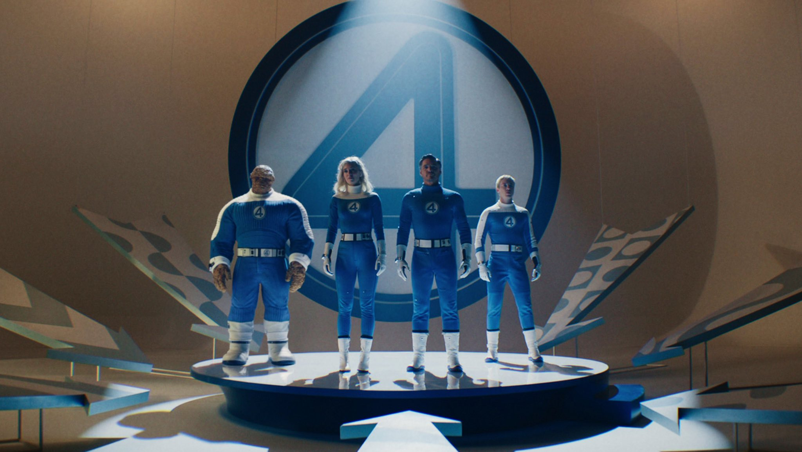

Après des années d’attente et de spéculations, Marvel Studios lève enfin le voile sur son prochain grand projet : Les 4 Fantastiques. Ce film très attendu, qui introduira la célèbre équipe dans le Marvel Cinematic Universe, promet une aventure à la fois spectaculaire et fidèle aux comics. Avec une esthétique rétro-futuriste et une intrigue mêlant action, science-fiction et liens familiaux, ce premier teaser donne un avant-goût alléchant de ce qui nous attend.
Un casting de rêve
Dans ce nouveau film réalisé par Matt Shakman, on retrouvera :
- Pedro Pascal dans le rôle de Reed Richards/Mr. Fantastique
- Vanessa Kirby en Sue Storm/La Femme Invisible
- Joseph Quinn incarnant Johnny Storm/La Torche Humaine
- Ebon Moss-Bachrach dans le rôle de Ben Grimm/La Chose
Le grand méchant du film ne sera autre que Galactus, interprété par Ralph Ineson.
Une bande-annonce qui en dit long
La bande-annonce démarre sur une ambiance mystérieuse, avec une narration en voix off qui laisse entendre que les 4 Fantastiques existent depuis longtemps dans l’ombre du MCU (dans un univers alternatif). On découvre ensuite Reed Richards, plongé dans ses recherches scientifiques, tandis que Sue Storm semble déjà maîtriser ses pouvoirs d’invisibilité.
Johnny Storm fait une entrée spectaculaire en s’embrasant complètement avant de fendre le ciel à grande vitesse, et Ben Grimm apparaît sous sa forme rocailleuse, prêt à en découdre. La mise en scène laisse présager un film à la fois fidèle aux origines des comics de Jack Kirby et ancré dans le style cinématographique du MCU.
Cette première bande-annonce s’articule parfaitement avec les premiers éléments de synopsis diffusés par Marvel il y a quelques mois.
« Avec pour toile de fond un monde rétro-futuriste inspiré des années 1960, Les Quatre Fantastiques : First Steps de Marvel Studios présente la première famille de Marvel – Reed Richards/Mister Fantastic, Sue Storm/la Femme Invisible, Johnny Storm/la Torche et Ben Grimm/La Chose – confrontée à son plus grand défi à ce jour. Obligés de trouver un équilibre entre leur rôle de héros et la force de leur lien familial, ils doivent défendre la Terre contre un dieu de l’espace vorace appelé Galactus (Ralph Ineson) et son énigmatique héraut, le Surfeur d’argent (Julia Garner). Et comme si le plan de Galactus visant à dévorer la planète entière et tous ses habitants ne suffisait pas, les choses deviennent soudain très personnelles. »
Un affrontement cosmique
Le teaser annonce également l’arrivée de Galactus, une menace cosmique qui plane sur la Terre. Quelques plans suggèrent l’apparition de son gigantesque vaisseau dans l’espace, tandis que la voix d’un mystérieux personnage, probablement le Silver Surfer, avertit de l’imminence du danger.

Un film au cœur de la Phase 6
Ce premier aperçu semble confirmer que Les 4 Fantastiques joueront un rôle majeur dans la future saga du MCU, possiblement en lien avec les événements de Avengers: Secret Wars. Les fans espèrent que ce reboot saura enfin rendre justice à l’équipe mythique après plusieurs tentatives mitigées.

Conclusion
Avec une telle équipe et une approche originale, Les 4 Fantastiques s’annonce comme un incontournable du MCU. Prévu pour le 25 juillet 2025, ce film pourrait bien redonner ses lettres de noblesse à cette équipe iconique.
Que pensez-vous de cette bande-annonce ? Êtes-vous impatients de découvrir ce film ?